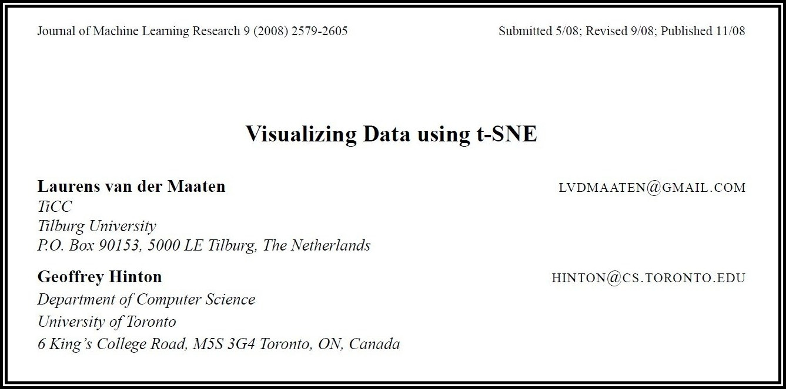
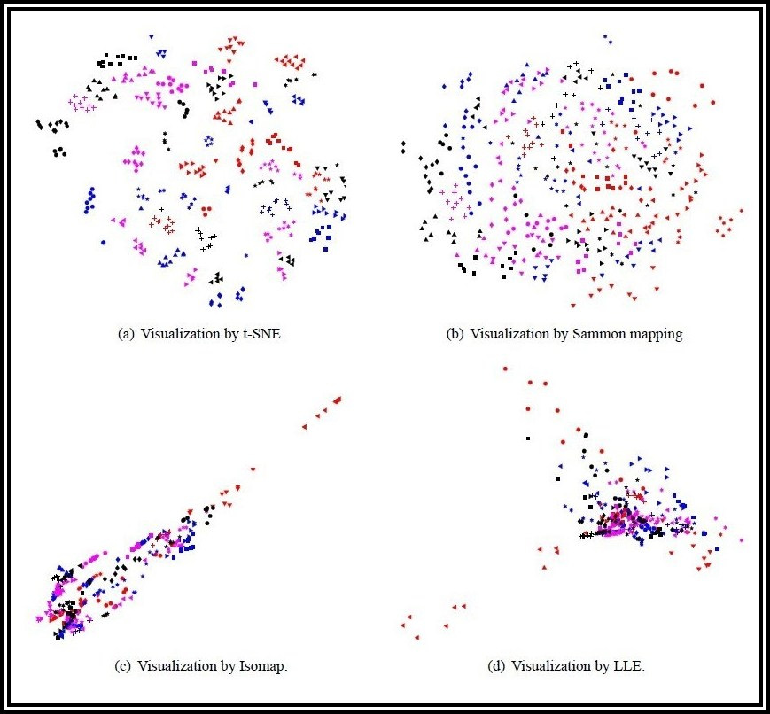

Visualizing Data using t-SNE
Laurens van der Maaten & Geoffrey Hinton
Journal of Machine Learning Research, Vol. 9 (2008) 2579-2605
A presentation by:
Jyotishka Ray Choudhury (BS1903)
B.Stat 3rd Year
Indian Statistical Institute, Kolkata
20th April, 2022
Visualizing Data using t-SNE
Laurens van der Maaten & Geoffrey Hinton

Introduction
t-distributed Stochastic Neighbour Embedding, commonly known as t-SNE, is a statistical method for visualizing high-dimensional data, as well as a non-linear technique of dimension reduction.
-
t-SNE is an unsupervised statistical learning algorithm, i.e. it works on unlabeled data
without any prior training.
-
t-SNE works by giving each datapoint a location in 2D or 3D space, preserving some structures
in the original dataset.
Why t-SNE ?
-
t-SNE has a huge scope of applicability in the field of biomedical and genetic research where researchers often encounter microarray-type datasets.
Due to a very high number of features, these sort of datasets are nearly impossible to visualize. t-SNE is one of the possible
methods which helps us in this regard.
-
t-SNE is often employed in the field of cluster analysis where the local cluster structures
can be visualized quite well using t-SNE.
Notations and Objective
-
Suppose we have a dataset $\mathcal{X}$ with $n$ datapoints, say $X_1$, $X_2$, $\cdots$, $X_n$. Each $X_i$ has $d$ many features, i.e. $X_i \in \mathbb{R}^d$, where $d$ is large.
-
Often times, it is believed that the datapoints are lying on a lower-dimensional manifold. We wish to find out such a lower-dimensional embedding or mapping of $\mathcal{X}$, say $\mathcal{Y}$, where each $X_i$ maps to $Y_i$ in the low-dimensional space for $i = 1, 2, \cdots, n$.
-
The embedding is expected to locally preserve the distances among each pair of points. So, in case some $X_i$ and $X_j$ are near each other in the actual dataset, their embeddings $Y_i$ and $Y_j$ are expected to lie in close proximity as well.
Stochastic Neighbour Embedding
-
The concept of Stochastic Neighbour Embedding (SNE) was introduced by Hinton and Roweis in their paper with the same title, published in NIPS (Neural Information Processing Systems), 2002.
-
SNE starts by converting the high-dimensional Euclidean distances between datapoints into conditional probabilities that represent similarities.
Stochastic Neighbour Embedding
We shall be considering the following notations:
-
The conditional probability $p_{j|i}$ is defined to be the similarity of $X_j$ to $X_i$, i.e. the probability that $X_i$ would pick $X_j$ as its "neighbour" if neighbours were picked in proportion to their probability density under a normal density centered at $X_i$.
-
For the low-dimensional counterparts $Y_i$ and $Y_j$ of $X_i$ and $X_j$, it is possible to compute an analogous conditional probability, which we shall denote by $q_{j|i}$.
Stochastic Neighbour Embedding
Let us summarize the contents of the last slide:
-
For each $X_i$, define : $$p_{j|i} ~\propto~ \exp\left(-\frac{||X_i - X_j||^2}{2\sigma_i^2}\right)\qquad\text{for } j = 1,\cdots,n~;~j\neq i$$
-
Similarly, for the low-dimensional counterpart $Y_i$, define : $$q_{j|i} ~\propto~ \exp\left(-||Y_i - Y_j||^2\right)\qquad\text{for } j = 1,\cdots,n~;~j\neq i$$
Stochastic Neighbour Embedding
-
For each $X_i$, define : $$p_{j|i} ~\propto~ \exp\left(-\frac{||X_i - X_j||^2}{2\sigma_i^2}\right)\qquad\text{for } j = 1,\cdots,n~;~j\neq i$$
-
Similarly, for the low-dimensional counterpart $Y_i$, define : $$q_{j|i} ~\propto~ \exp\left(-||Y_i - Y_j||^2\right)\qquad\text{for } j = 1,\cdots,n~;~j\neq i$$
Stochastic Neighbour Embedding
-
Note that the $\sigma_i$’s are chosen such that, for each datapoint , the ball centered at $X_i$ of radius $\sigma_i$ contains approximately same number of other datapoints. This is obtained through fixing the perplexity of the Gaussian distributions to a fixed quantity.
-
Any particular value of $\sigma_i$ induces a probability distribution, say $P_i$, over the complete set of datapoints.
Stochastic Neighbour Embedding
-
Perplexity is defined as :
$$\text{Perp}(P_i) = 2^{H(P_i)} = 2^{-\sum_j p_{j|i} \log_2 (p_{j|i})}$$ where $H(X_i)$ is the Shannon Entropy for the distribution $P_i$.
-
The perplexity can be interpreted as a measure of the effective number of neighbours. The performance of SNE is fairly robust to changes in the perplexity, and its values typically lie in between $5$ and $50$.
Comparison of $\mathcal{X}$ and $\mathcal{Y}$ in SNE
-
In case the low-dimensional embedding $Y_i$ of $X_i$ is appropriate, we expect that ideally $p_{j|i}$ should be same as $q_{j|i}$ for all $j = 1, 2, \cdots, n$. So, if we denote $P_i = (p_{1|i}, \cdots, p_{n|i})$ and $Q_i = (q_{1|i}, \cdots, q_{n|i})$, then for a perfect embedding we shouldhave $P_i \approx Q_i$.
-
However, that doesn't always happen. So, the authors decided to minimize the Kullback-Leibler Divergence between $P_i$ and $Q_i$ for each $X_i$.
Comparison of $\mathcal{X}$ and $\mathcal{Y}$ in SNE
-
In SNE, our objective is to minimize $$C = \sum_{i = 1}^n \text{KL}(P_i || Q_i) = \sum_{i=1}^n \sum_{j=1}^n p_{j|i} \log\left(\dfrac{p_{j|i}}{q_{j|i}}\right)$$ with respect to all the points $Y_i$ in the embedding.
-
We minimize the cost function using some gradient descent technique, e.g. Newton-Raphson algorithm. The gradient for the $i$-th embedded point $Y_i$ is : $$\dfrac{\partial C}{\partial Y_i} = 2\sum_{j \neq i} (p_{j|i} - q_{j|i} + p_{i|j} - q_{i|j})(Y_i - Y_j)$$
Iterations for SNE
-
Mathematically, the gradient update with a momentum term is given by : $$\mathcal{Y}^{(t)} = \mathcal{Y}^{(t-1)} + \eta\cdot\dfrac{\partial C}{\partial \mathcal{Y}^{(t-1)}} + \alpha(t)\cdot\big(\mathcal{Y}^{(t-1)} - \mathcal{Y}^{(t-2)}\big)$$ where $\mathcal{Y}^{(t)}$ indicates the solution using SNE at iteration $t$, $\eta$ indicates the learning rate, and $\alpha(t)$ represents the momentum at iteration $t$.
-
These iterations are continued until we meet some convergence criterion on $\mathcal{Y}^{(t)}$.
Crowding Problem
-
Note that a higher dimension can accomodate more points at small distances, as compared to a lower dimension. For example, in 1D, only two points can be equidistant from a fixed point. But, in 2D, there exist infinitely many points (viz. a circle) that are are equidistant from that point.
-
In case of SNE, since we try to minimize each $\text{KL}(P_i||Q_i)$, so all such points would try to remain as close as possible in the lower-dimensional embedded space, which might create very dense clusters in the visualization. This is never desirable since we shall be losing information on the shapes of the clusters in data.
Symmetric SNE
-
The crowding problem can be avoided in most cases if we model the $p_{ij}$'s jointly, instead of considering the conditional probabilities $p_{j|i}$. We consider $$p_{ij} \propto \exp\left(-\frac{||X_i - X_j||^2}{2\sigma_i^2}\right)$$
-
In that case, the concerned gradient becomes $$\dfrac{\partial C}{\partial Y_i} = 4\sum_{j \neq i} (p_{ij}- q_{ij})(Y_i - Y_j)$$
Symmetric SNE
-
In case $X_k$ is an outlier, note that all of the distances $||X_1-X_k||$, $||X_2-X_k||$, $\cdots$, $||X_n-X_k||$ should be very large. Thus, $p_{k1}, p_{k2}, \cdots, p_{kn}$ should be pretty small, and the contribution of $X_k$ in $C$ will be negligible.
-
In such a situation, we may consider $p_{ij} = \dfrac{1}{2n}\big(p_{j|i} + p_{i|j}\big)$.
-
Note that $\sum_j p_{ij} > \frac{1}{2n}$, i.e. each datapoint $X_i$ makes at least a significant contribution to the cost function $C$. This might help us in overcoming the outlier problem.
Introduction to t-SNE
-
In the high-dimensional space, we convert distances into probabilities using a normal distribution. In the low-dimensional map, we can use a probability distribution that has much heavier tails than a Gaussian to convert distances into probabilities. This allows a moderate distance in the high-dimensional space to be faithfully modelled by a much larger distance in the map.
-
One such choice of heavy-tailed distribution might be a $t$-distribution with $1$ degree of freedom (i.e. a Cauchy distribution).
Introduction to t-SNE
-
Following the last slide, let us consider $q_{ij} \propto \dfrac{1}{1+||Y_i - Y_j||^2}$.
-
In that case, the concerned gradient becomes $$\dfrac{\partial C}{\partial Y_i} = 4\sum_{j \neq i} (p_{ij}- q_{ij})(1+||Y_i - Y_j||^2)^{-1}(Y_i - Y_j)$$
Iterations for t-SNE
-
Mathematically, the gradient update with a momentum term is given by : $$\mathcal{Y}^{(t)} = \mathcal{Y}^{(t-1)} + \eta\cdot\dfrac{\partial C}{\partial \mathcal{Y}^{(t-1)}} + \alpha(t)\cdot\big(\mathcal{Y}^{(t-1)} - \mathcal{Y}^{(t-2)}\big)$$ where $\mathcal{Y}^{(t)}$ indicates the solution using t-SNE at iteration $t$, $\eta$ indicates the learning rate, and $\alpha(t)$ represents the momentum at iteration $t$.
-
These iterations are continued until we meet some convergence criterion on $\mathcal{Y}^{(t)}$.
Visualization of Datasets using t-SNE
-
A large class of real as well as simulated datasets can be visualized pretty well in 2D using t-SNE.
-
In the next few slides, we shall see some 2D embeddings of some high-dimensional datasets, made using some different techniques including t-SNE, Sammon Mapping, Isomap, LLE etc.
Olivetti Faces Dataset

Performance of t-SNE
-
In both of the aforementioned examples, we can clearly observe that the embeddings using t-SNE carries much more meaningful information about the clusters in the original data.
-
We can see some crowding issues in case of the other methods such as Isomap, Sammon Mapping etc. However, t-SNE has not faced this issue, thanks to the corrections that have been employed beforehand (discussed earlier).
Drawbacks
-
For each iteration, the runtime complexity of t-SNE is $\mathcal{O}(n^2)$. This is reasonable for datasets with small or moderate number of datapoints. Nevertheless, for very large datasets, the necessary computations for t-SNE might take a lot of time which is impratical.
-
Due to its unsupervised nature, t-SNE can't be employed as a classification method. Consequently, whenever we get some new datapoints, all the computations are needed to be performed from the beginning which, again, might be very time-consuming.